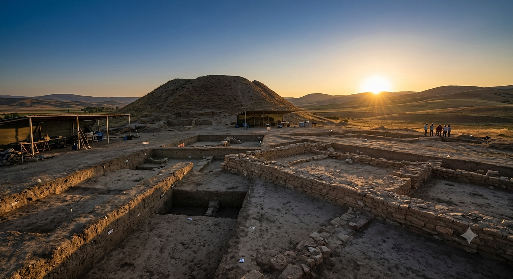
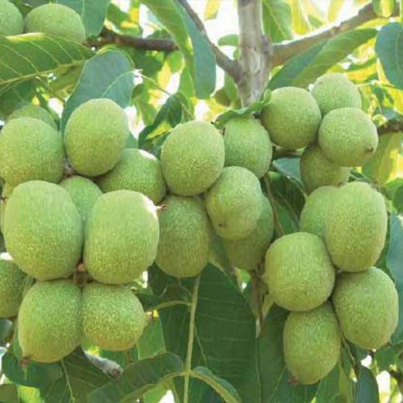

Anadolu'nun Merkezinde Bir Değer: Kaman
Tarih, turizm, tarım ve akademik bilişim vizyonunun buluşma noktası.
Tarihsel Derinlik
Milattan Önceye Uzanan Köklü Geçmiş
Kaman, yapılan Kalehöyük kazı çalışmalarıyla ilk yerleşimin Erken Bronz Çağı'na kadar uzandığını ortaya koymaktadır. Asur, Hitit, Frig ve Osmanlı gibi medeniyetlerin izlerini taşıyan ilçe, bugün kamanubyo2026 projesiyle bu zengin tarihi veri tabanı disipliniyle dijital dünyaya entegre etmektedir.

İnteraktif Keşif
Kaman'ı Dijitalde Gezin
Uluslararası üne sahip Japon Bahçesi'nin konumu ve ilçemizin görsel zenginliği.

Yerel Ekonomi
Coğrafi İşaretli Dünya Markası
İncecik kabuğu ve yüksek yağ oranıyla Kaman Cevizi, ilçenin dijital e-ticaret potansiyelinin bel kemiğidir. kamanubyo2026 olarak bu değeri modern arayüzlerle tanıtıyoruz.
Kampüs Hayatı
Kaman'da Öğrenci Olmak ve Akademik Vizyon
Kırşehir Ahi Evran Üniversitesi'ne bağlı Kaman UBYO, samimi ve yenilikçi bir kampüs hayatı sunar. Özellikle Yönetim Bilişim Sistemleri (YBS) gibi dijital dünyanın dinamiklerine hakim bölümlerin yanı sıra, Öğretim İlke ve Yöntemleri gibi pedagojik formasyon eğitimleriyle geleceğin liderlerini ve eğitmenlerini yetiştiren donanımlı bir altyapıya sahiptir.
Öğrenciler burada sadece teorik eğitim almakla kalmaz; kamanubyo2026 gibi akademik SEO ve web projelerinde yer alarak sektöre tam donanımlı bir şekilde hazırlanırlar. Öğrenci dostu yaşam koşulları, yurt imkanları ve zengin sosyal alanlarıyla Kaman, Anadolu'da bilimin dijitalle yoğrulduğu eşsiz noktalardan biridir.
Merak Edilenler
Sıkça Sorulan Sorular
Kaman UBYO, özellikle Yönetim Bilişim Sistemleri (YBS) gibi teknoloji ve analitik odaklı yenilikçi bölümleri barındırır. Öğrenciler dijital dönüşüm projelerinde aktif rol alırken, sunulan pedagojik formasyon imkanlarıyla da kariyerlerini çeşitlendirebilmektedir.
Kaman-Kalehöyük Arkeoloji Müzesi'nin hemen yanında bulunan Japon Bahçesi, Kırşehir'in Kaman ilçesi Çağırkan beldesindedir. Yılın her dönemi, özellikle ilkbahar aylarında sakura (kiraz) çiçeklerinin açmasıyla ziyarete açıktır.
Kaman cevizi, bölgenin mikro klima ikliminde yetişen, çok ince kabuklu, acılık oranı sıfıra yakın ve yağ oranı yüksek coğrafi işaret tescilli bir ceviz türüdür. Her yıl Ekim ayında adına festival düzenlenmektedir.
"Kaman'ın tarihini ve Japon Bahçesi'ni bu kadar kapsamlı anlatan başka bir kaynak bulamamıştım. Emeği geçenlere teşekkürler!"
- Ahmet Yılmaz, Arkeoloji Tutkunu